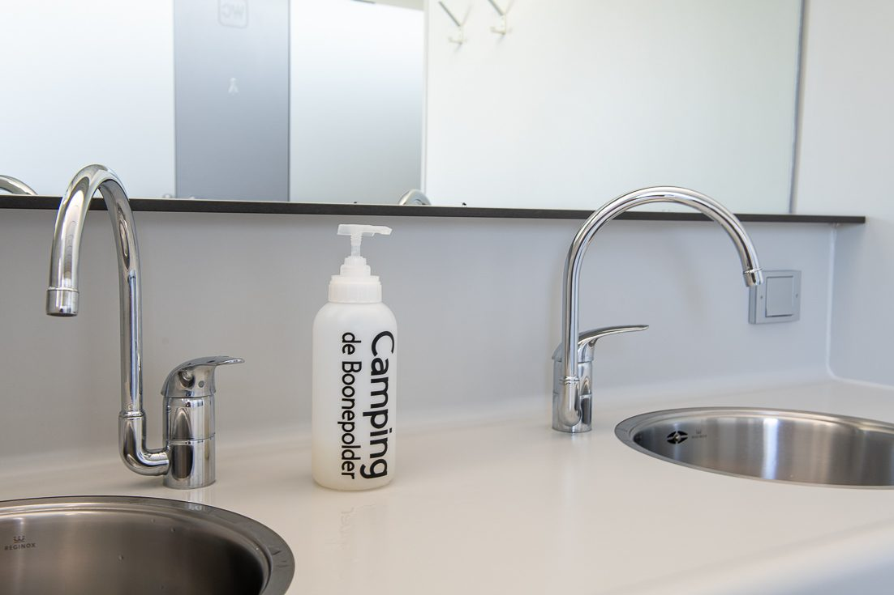
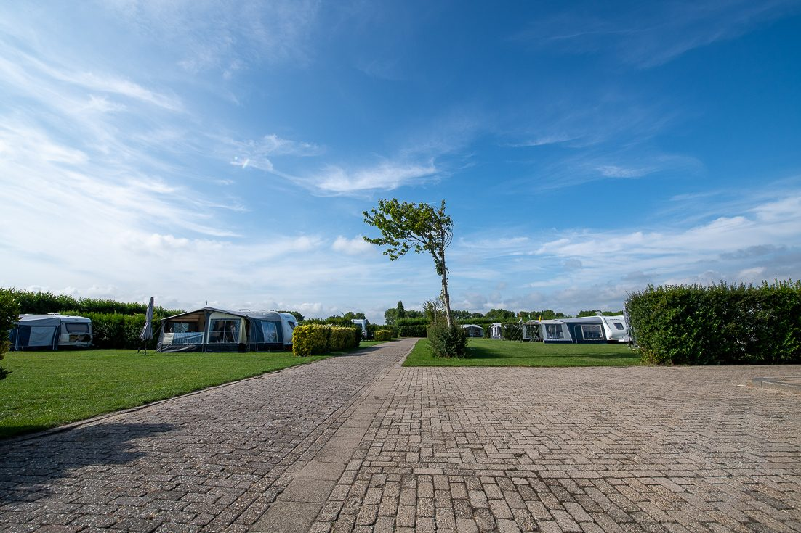
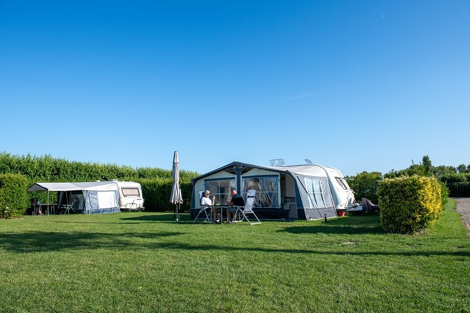
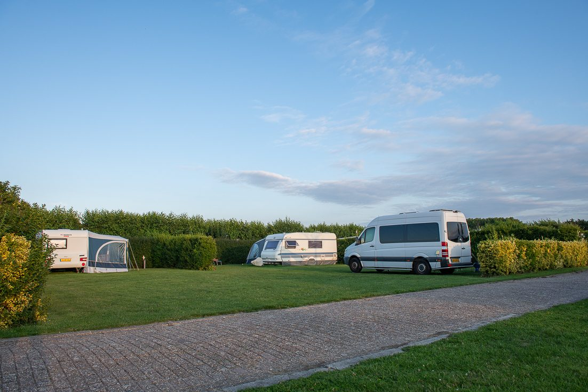
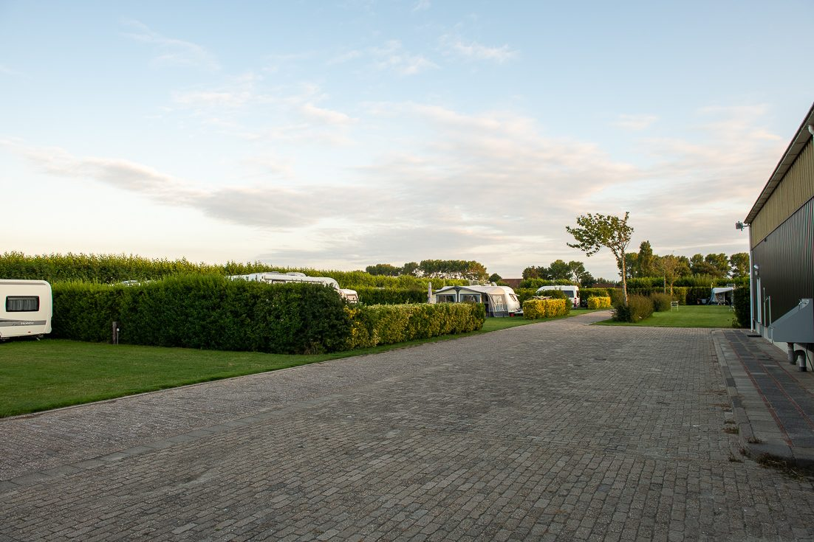
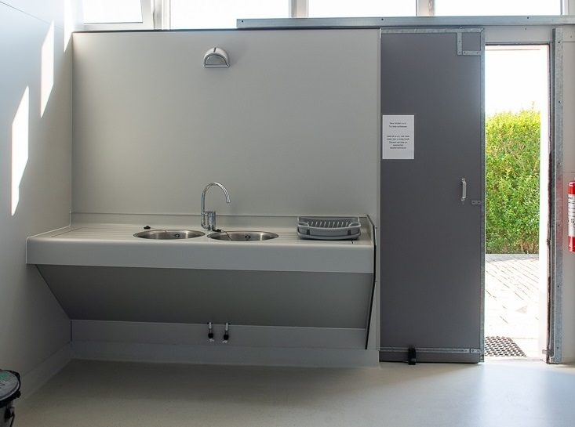
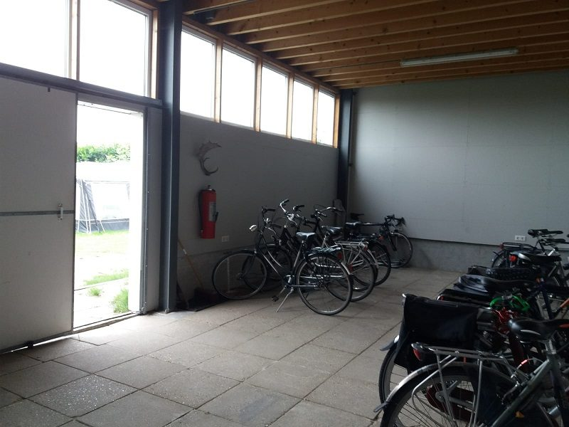
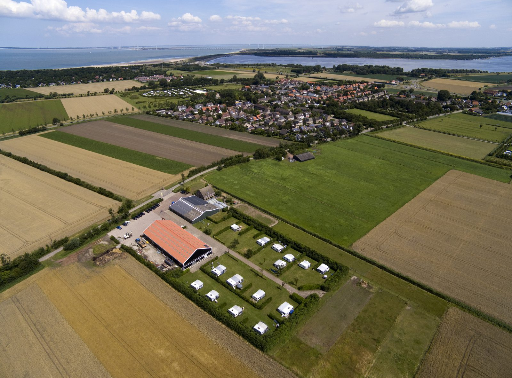
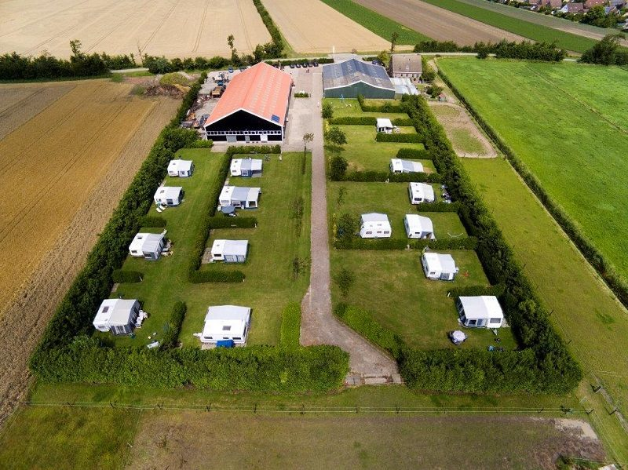

Sanitair
Twee doucheruimtes, vier toiletten en een aparte wasruimte. 6 minuten warm douchen, zonder muntjes.
Douchen gratisMeer info

25 ruime plekken omgeven door groen, op 1,5 km van het strand, het bos en het Veerse Meer. Een kleine familiecamping, sinds 1989.
De Boonepolder is een rustig gelegen familiecamping aan de zuidwestkant van het dorp. U staat op een mooie, ruime plek, omgeven door groen. Alle kampeerplaatsen hebben elektra en koud water.
Het dorpscentrum ligt op ongeveer een kilometer. De duinen ziet u vanaf het parkeerterrein al liggen.



Sanitair en keuken zijn verwarmd, heerlijk in het voor- en najaar. Overal zacht water.

Twee doucheruimtes, vier toiletten en een aparte wasruimte. 6 minuten warm douchen, zonder muntjes.

Afwassen met warm water, een koelkast met vriezer voor gratis gebruik en een wasmachine.

Uw fietsen staan droog in de fietsenschuur. Uw elektrische fiets laadt u hier gratis op.
"Mooie en rustige minicamping met goede nette faciliteiten. Niets op aan te merken, top!"
campervenCampercontact, mei 2024"Een van de mooiste minicampings, met alles wat je nodig hebt: ruime staanplaatsen met water- en afvalwateraansluiting. (...) De ontvangst was uitzonderlijk vriendelijk en hartelijk. De sanitaire voorzieningen waren altijd zeer schoon."
Welcome514Campercontact, juli 2026 (vertaald uit het Duits)"Een zeer aangename, rustige camping. Wij hebben hier 7 nachten doorgebracht. (...) Het ruime sanitair is altijd schoon, de parkeerplaatsen zijn ruim bemeten."
StedigoCampercontact, oktober 2024 (vertaald uit het Duits)Vrouwenpolder ligt in de punt van Walcheren, naast natuurpark Oranjezon. Een fijne plek voor een wandel- of fietsvakantie.


Minicamping de Boonepolder bestaat sinds 1989. U kampeert bij ons aan de Zoekweg, landelijk gelegen en toch dicht bij het dorp. Bij aankomst meldt u zich gewoon bij het huis.
De naam komt van de polder waarin we liggen: de Boone en Goede Polder, bedijkt in 1247-1251.
Laat ons weten wanneer u wilt komen, met hoeveel personen en met welk kampeermiddel. U hoort zo snel mogelijk van ons.
Stuur ons een appje of bel even. Dan kijken we samen welke plek er voor u vrij is.